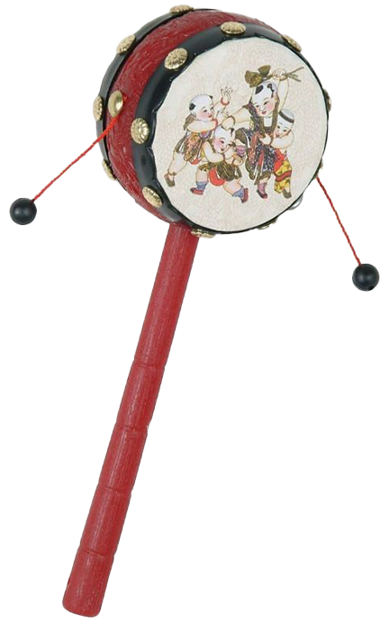
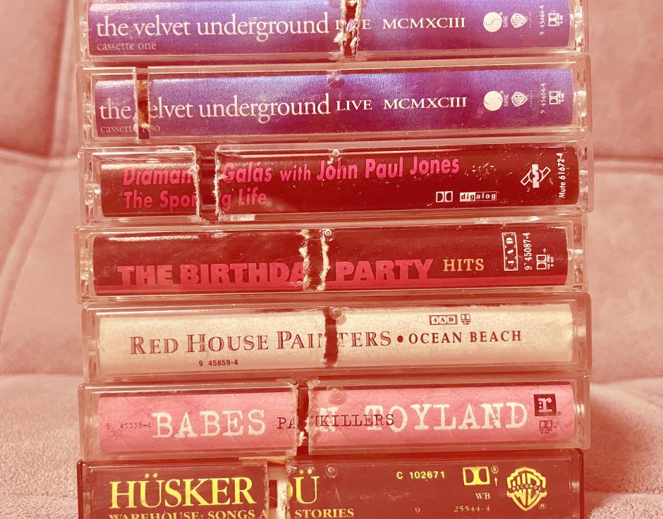
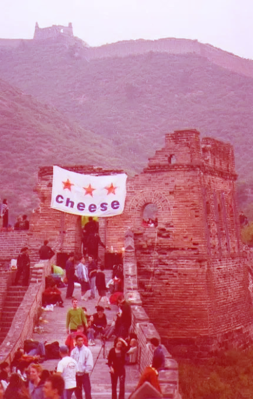
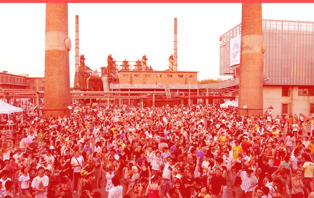
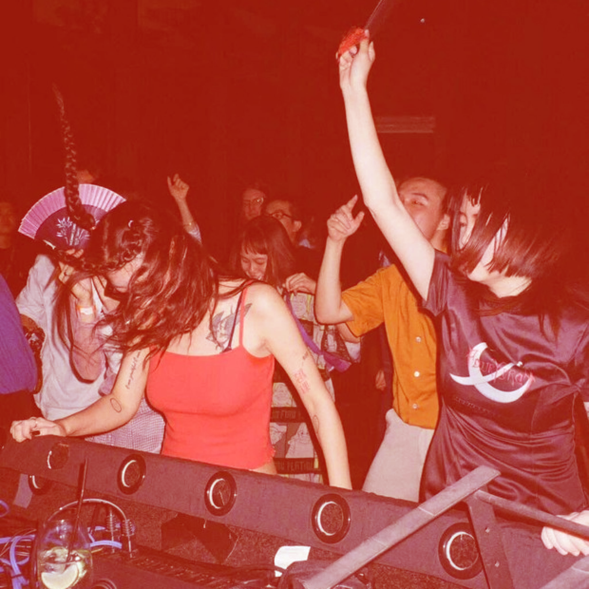
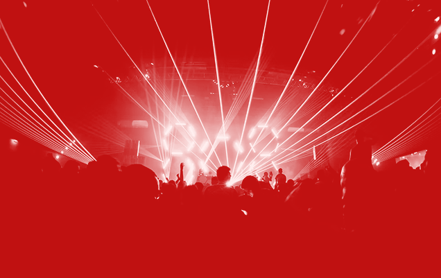
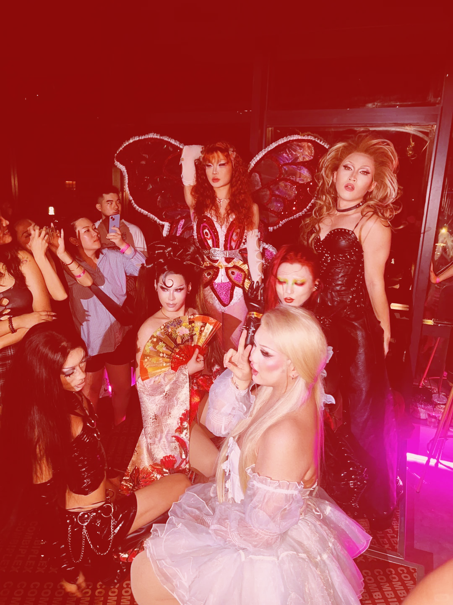
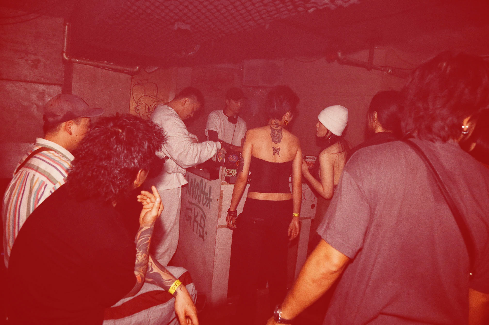

History
Nights that quietly built the scene.
This is not a complete history of Chinese rave culture, just a personal timeline. Smuggled CDs, smoky ballrooms, basements, queer crews, festivals, and cloud rave, all stitched together by people who kept showing up after dark.
Late 1980s–1990s
Smuggled CDs, smoky ballrooms
Before “rave” was a word, dakou CDs and bootleg tapes carried house and techno into bedrooms and dorms. In the cities, kids were already sweating in ballroom-style discos, dancing to electronic rhythms without any genre labels — just a feeling that the future sounded like this.
1998
A rave on the Great Wall
A small group hauled speakers, lights, and records up to Simatai Great Wall and threw an all-night party. No brand sponsorship, no official poster, just wind, lasers, and a few hundred strangers. People still talk about it like a myth: someone once danced on the Great Wall until sunrise.
Early 2000s
Big clubs, bigger logos
As cities got richer, super-clubs arrived: velvet ropes, bottle service, brand-sponsored “electronic nights.” International DJs flew in, local kids dressed up, and EDM became a glossy fantasy of nightlife. It wasn’t underground, but for many, this was the first time bass physically shook their chest.
Mid 2000s
Basements and back rooms
Away from the champagne tables, small rooms appeared in basements and side streets. The DJ booth moved closer to the crowd. People came not to show off, but to actually listen. That’s where future organizers, queer kids, designers and bedroom producers met each other for the first time.
2013
Festivals & mass EDM
Massive outdoor festivals turned parking lots into temporary cities. Tens of thousands jumped to the same drop. Some came for selfies, some came for the stage design, some walked away thinking: I want to be the one behind those decks.
Mid–late 2010s
Queer nights & new club cities
Small clubs and DIY crews mixed rave with drag, vogue, live visuals and noise. Chengdu, Shenzhen, Wuhan, Kunming and more joined the map. Dance floors became places where gender, style, and language could all glitch a little.
2020–2021
Cloud raves
When clubs shut down, the music moved into bedrooms and phone screens. DJs streamed to tiny chat windows; people danced alone in dorms and shared screenshots the next morning. When doors finally reopened, local DJs and crews felt less like “bookings” and more like family.
Now
Still writing it
This history is unfinished on purpose. Every new party, illegal rooftop, or half-broken sound system adds one more line. Night Matter is just one way of bookmarking the nights we don’t want to forget.